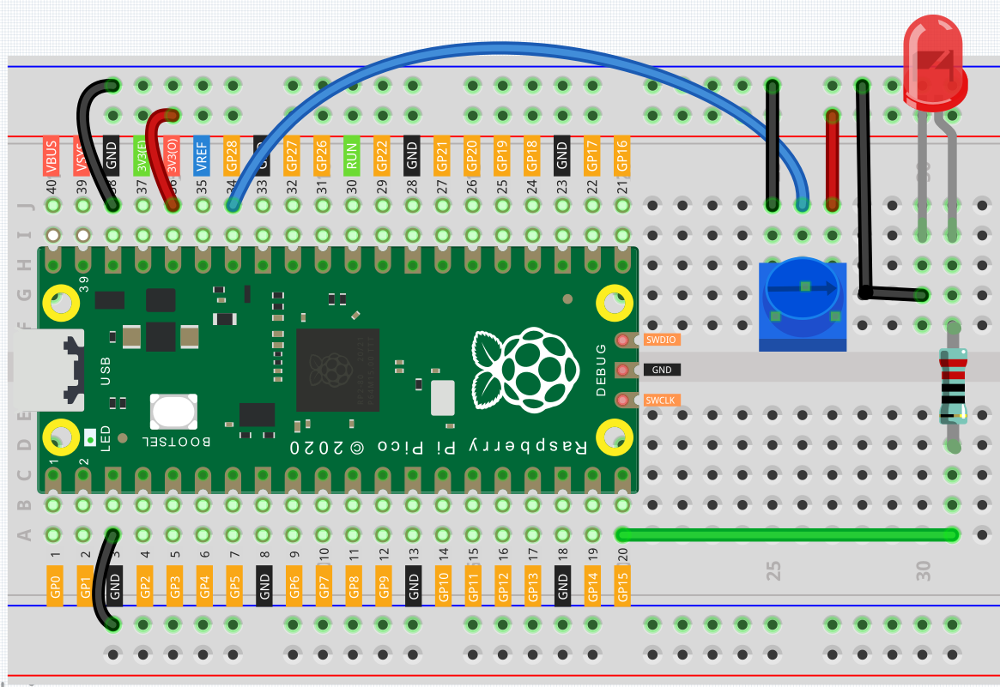

Turn the knob¶
在前面的章节中，我们已经使用了Pico的上的数字输入。 如按键，可以让引脚从低电平(关闭)变成高电平（开启）。这是一种二进制的工作状态。
但是，Pico可以接收另一种类型的输入信号：模拟输入。 它可以是从完全关闭到完全开启的任何状态，有一系列可能的值。 模拟输入可让微控制器感应物理世界的光照强度、声音强度、温度、湿度等等。
通常，微控制器实现模拟输入都需要一个额外的硬件 —— the analogue-to-digital converter (ADC). 但是Pico本身拥有内置的ADC可以供我们直接使用。

Pico有三个GPIO引脚可以使用模拟输入，GP26、GP27、GP28。也就是模拟通道0、1、2。 除此之外还有第四个模拟通道，它连接在内置的温度传感器中，在这里不作介绍。
在本章节，我们借助potentiometer来尝试读取模拟值。
Wiring¶
将 Pico 的 3V3 和 GND 连接至面包板的电源总线。
将 potentiometer 插入面包板中，它的三个pin应当位于不同的行中。
用跳线将 potentiometer 两侧的引脚分别连接至正负极电源总线。
用跳线将 potentiometer 的中间引脚连接至GP28。
将 led 阳极经由220Ω电阻连接至GP15引脚，阴极连接至负极电源总线。
Code¶
import machine
import utime
potentiometer = machine.ADC(28)
led = machine.PWM(machine.Pin(15))
led.freq(1000)
while True:
value=potentiometer.read_u16()
print(value)
led.duty_u16(value)
utime.sleep_ms(200)
当程序运行时，我们能在shell看到GP28引脚当前读取到的模拟值，转动knob，数值将在0~65535之间变化。 同时，LED的亮度也会根据模拟值增大而增大。
What more?¶
让我们用potentiometer knob来让servo左右摇摆吧！

import machine
import utime
potentiometer = machine.ADC(28)
servo = machine.PWM(machine.Pin(15))
servo.freq(50)
def interval_mapping(x, in_min, in_max, out_min, out_max):
return (x - in_min) * (out_max - out_min) / (in_max - in_min) + out_min
def servo_write(pin,angle):
pulse_width=interval_mapping(angle, 0, 180, 0.5,2.5)
duty=int(interval_mapping(pulse_width, 0, 20, 0,65535))
pin.duty_u16(duty)
while True:
value=potentiometer.read_u16()
angle=interval_mapping(value,0,65535,0,180)
servo_write(servo,angle)
utime.sleep_ms(200)